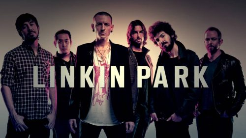
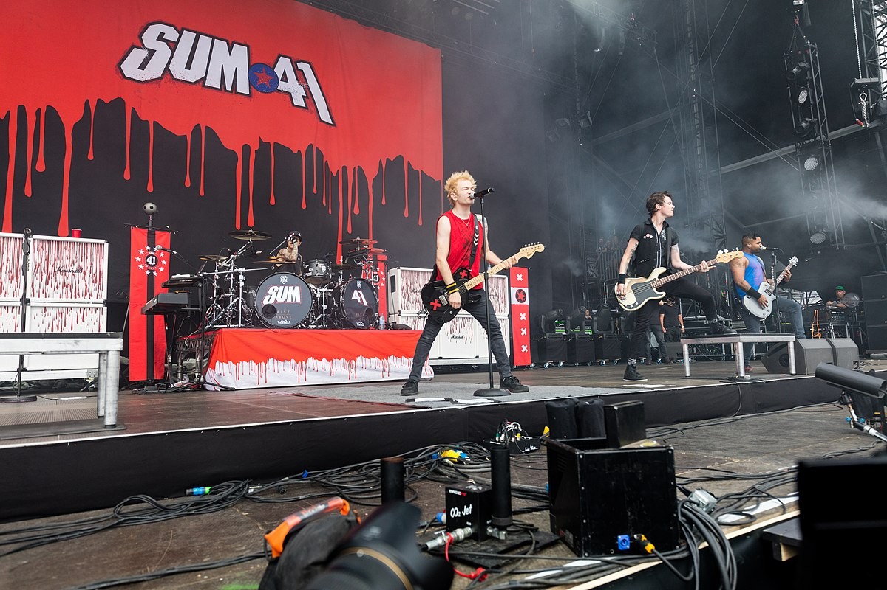
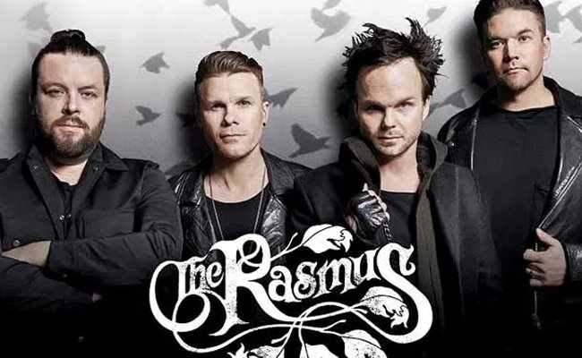
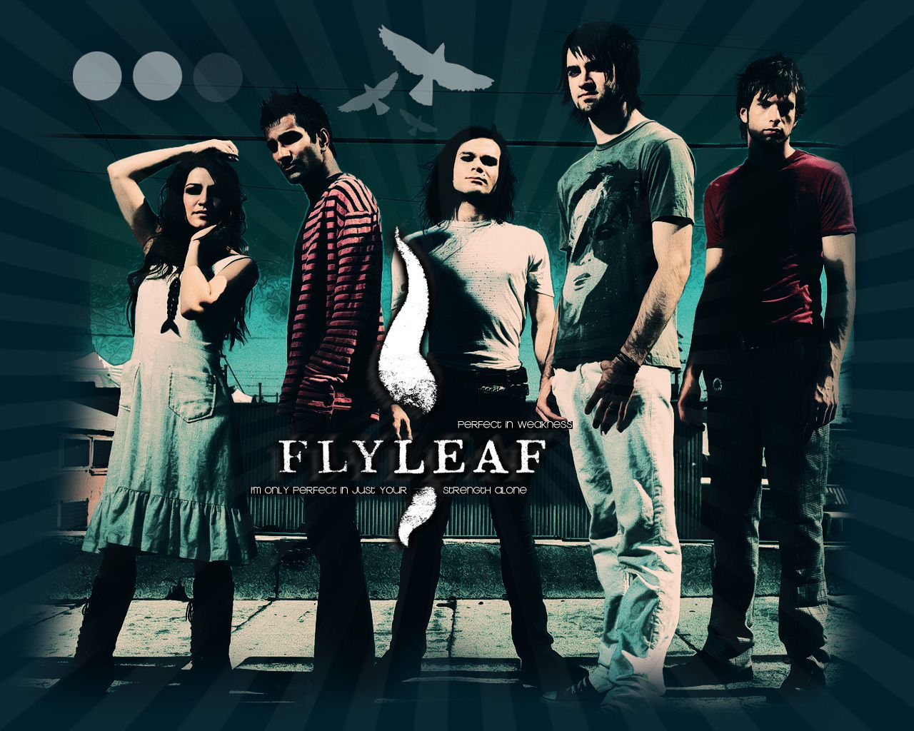

Se conoce como Rock a un conjunto de géneros variados de música popular, descendientes más o menos del Rock n’ Roll original
nacido en los Estados Unidos en la década de 1950, como fruto de una fusión entre la música Country y el Rhythm and Blues.
Típicamente, el Rock es un género reconocido por la predominancia de la guitarra eléctrica, con canciones de compás 4/4 y una estructura
verso-estribillo. Pero en su evolución particular es difícil hoy en día dar con características realmente comunes.
1960 se considera la década mágica que define este género musical. La llegada al Reino Unido de estos sonidos provocó en la escena musical
británica de la época un salto evolutivo. Es justo en este período cuando pudiéramos decir que el Rock and Roll originado en Los Estados Unidos
derivó en lo que hoy conocemos como Rock.
|  |
| Era una banda estadounidense de rock alternativo procedente de Agoura Hills, California formada en 1996. Integrada por Mike Shinoda, Dave Farrell, Joe Hahn, Brad Delson, Rob Bourdon y Chester Bennington, este último como voz principal. El grupo es conocido por su estilo musical característico que mezcla de rock, rap y sonidos electrónicos, si bien desde sus inicios se le consideró como nu metal, hasta lo que fue su segundo álbum Meteora, en ese entonces decidió por este género y por el rap metal. |
| Numb (Album: Meteora) |
|  |
| Es una banda de rock originaria de Ajax, Ontario, Canadá. Fue formada en 1996 y actualmente está integrada por Deryck Whibley (guitarra rítmica, teclados, voz principal), Dave "Brownsound" Baksh (guitarra solista), Jason McCaslin (bajo), Tom Thacker (guitarra solista y rítmica, teclados) y Frank Zummo (batería). En abril de 2013, el baterista Steve Jocz anunció su salida de la banda. Se han vendido más de 10 millones de álbumes en todo el mundo. |
| Still Waiting (Album: Does This Look Infected?) |
|  |
| Es una banda finlandesa de rock alternativo y rock gótico formada en Helsinki en 1994. La palabra Rasmus no significa de hecho nada; la banda ha dicho en entrevistas que escogieron este nombre porque "suena finlandés" y es fácil de recordar. La banda ha comentado que están abiertos a todo tipo de música y que se mantienen en constante cambio, por lo que no sería extraño que en un disco futuro usaran nuevos "elementos" a la hora de componer. |
| In The Shadows (Album: Dead Letters) |
|  |
| Es una banda de rock procedente de Belton, Texas,1 Estados Unidos, formada en el año 2002. «Flyleaf es la primera hoja en blanco en la parte frontal de un libro», explica Lacey Mosley, la exvocalista del grupo. El estilo de la banda se ha considerado entre el rock cristiano, por su sonido y por sus letras que están inspiradas por las vivencias de la banda y por experiencias religiosas, así también como en el género del metal alternativo por el carácter comercial de sus canciones entremezclado con sonidos duros y algunos gritos guturales que ejerce la vocalista Lacey Mosley en ciertas canciones |
| Again (Album: Memento Mori) |